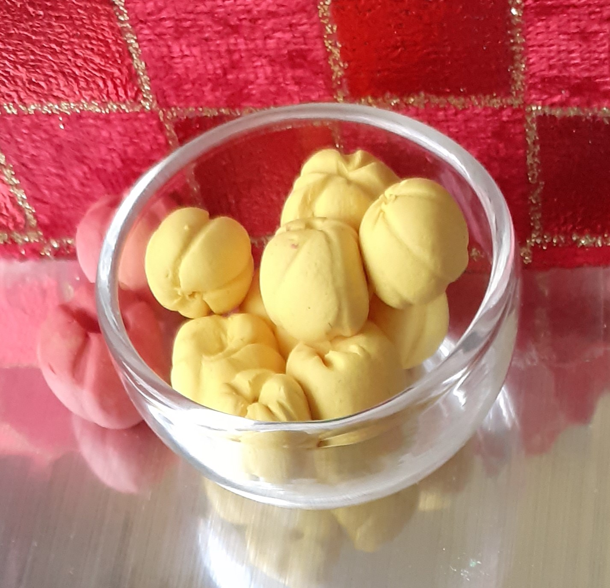
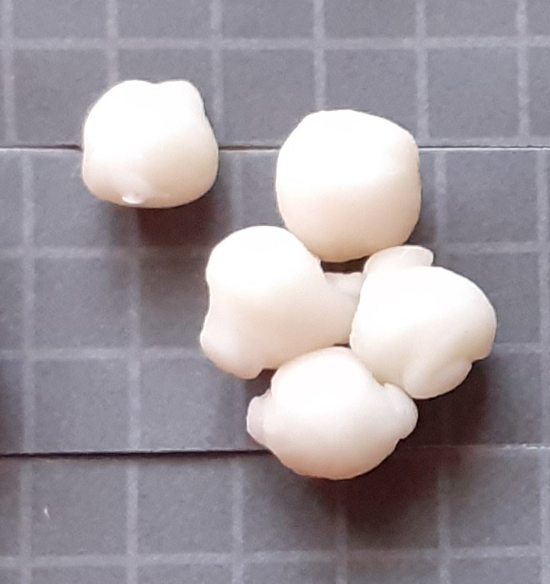

Ratatouille is a French Provençal dish of stewed vegetables, originating in Nice. Ingredients include tomato, garlic, onion, courgette, aubergine, capsicum, and leafy green herbs common to the region. The word ratatouille is thought to derive from the french verb touiller, meaning "to stir up". While Ratatouille is considered a peasant dish it is also prepared by many top chefs around the world. Original ratatouille recipes called for rough-cut vegetables to be fried before baking, but more recently French chefs have prepared the ratatouille vegetables in thin slices, often referred to as "byaldi", sometimes adding sauces.
Make a sauce of tomatoes and capsicums, starting with a little crushed garlic, add fresh thyme.
Sieve the sauce to remove tomato seeds and thyme stalks, and spread in a baking dish.
Make a vinaigrette of olive oil, lemon juice, parsley and salt.
Slice vegetables in rounds and lay out in alternating pattern on the tomato sauce. Gently drip vinaigrette from a height.
Bake in a moderate oven for an hour until all the flavours are melded.
Spiral the cooked vegetables into a round shape on the plate.
Ladle spoonfuls of the sauce over, allowing to pool in the plate.
Top with a sprinkle of freshly ground black pepper.
Tomatoes, Capsicums, Garlic, fresh Thyme
Extra Virgin Olive Oil, Lemons (Lisbon), fresh Parsley
Aubergines,
Courgettes,
Onions,
Carrots
(hover mouse over ingredient to see what it looks like)